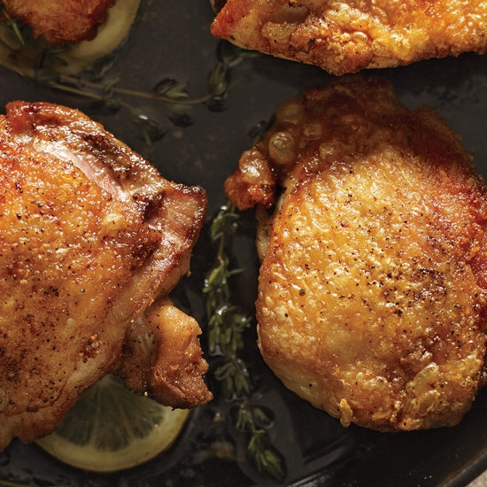

Perfect Cast-Iron Skillet Chicken Thighs

Description
Sophisticated enough for a Sunday supper yet quick enough for Wednesday's dinner,
this master recipe is all in the technique.
Cook the thighs skin side down in a cast-iron skillet to render out the fat and make the skin as crisp and,
dare we say, delicious as bacon.
Ingredients
2 to 4 main-course
- 6 skin-on, bone-in chicken thighs (about 2 1/4 pounds)
- Kosher salt and freshly ground pepper
- 1 tablespoon vegetable oil
Preparation
-
Preheat oven to 475°. Season chicken with salt and pepper.
Heat oil in a 12" cast-iron or heavy nonstick skillet over high heat until hot but not smoking.
Nestle chicken in skillet, skin side down, and cook 2 minutes. Reduce heat to medium-high;
continue cooking skin side down, occasionally rearranging chicken thighs and rotating pan to evenly distribute heat,
until fat renders and skin is golden brown, about 12 minutes.
-
Transfer skillet to oven and cook 13 more minutes.
Flip chicken; continue cooking until skin crisps and meat is cooked through,
about 5 minutes longer. Transfer to a plate; let rest 5 minutes before serving.
Nutrition Per Serving
serving contains: Calories (Kcal) 365.8 %Calories From Fat 60.1 Fat (g) 24.5 Saturated Fat (g)
6.1 Cholesterol (mg) 126.1 Carbohydrates (g) 0 Dietary Fiber (g) 0 Total Sugars (g) 0 Net Carbs (g)
0 Protein (g) 34.0 Sodium (mg) 113.9